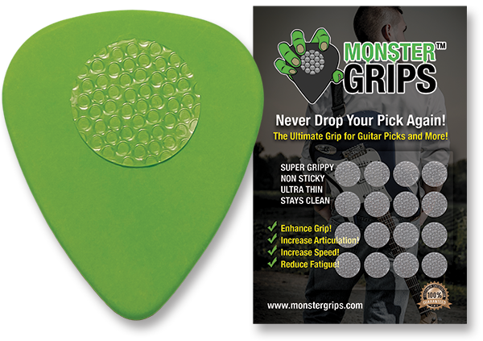
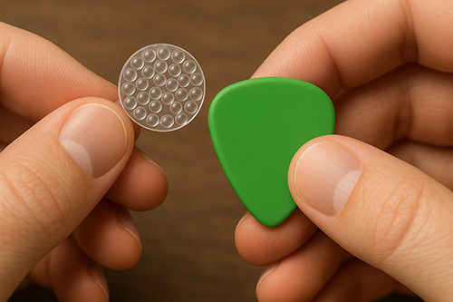

Never Drop Your Pick Again
The Ultimate Super Grippy, Non-Sticky, Silicone Grip!
The #1 Guitar Pick Grip
Monster Grips™ is a revolutionary guitar pick grip that is super grippy, non-sticky, and stays clean. Surprisingly durable, yet ultra-thin, it is extremely comfortable and is certain to enhance your playing experience. Monster Grips™ amazing properties allow you to hold the pick even more lightly, producing even better articulation, while reducing fatigue.
Each grip is a high quality, durable silicone, .5 inches in diameter and about .3mm thick. A single grip will comfortably and easily fit most picks. If a greater surface coverage is desired, more grips can be applied.
Easy to Apply in Seconds
Applying Monster Grips™ is fast and effortless. Simply peel a grip from the sheet and gently place it onto your pick. Its ultra-thin, flexible design conforms naturally to the surface without affecting the pick's feel or balance. No mess, no waiting; just instant, secure grip exactly where you want it.
Unleash Your True Playing Potential!
Monster Grips™ transforms the way you connect with your pick and your instrument.
No more slipping, dropping, or constant repositioning. Just pure, uninterrupted focus on your playing.
With Monster Grips™, you get a secure, confident hold that actually lets you grip lighter, not harder.
The result? Enhanced feel, greater finesse, and crystal-clear articulation with every note you play.
By holding the pick more lightly, your hand stays relaxed; eliminating fatigue, preventing arm pump, and unlocking longer, faster, and more effortless playing sessions.
No struggle. No strain. Just pure, fluid performance.
Whether you're shredding solos, fingerpicking intricate runs, or powering through heavy rhythms, Monster Grips™ gives you the control, speed, and stamina to play at your very best.
Serious players demand serious performance, and that's exactly what Monster Grips™ delivers.